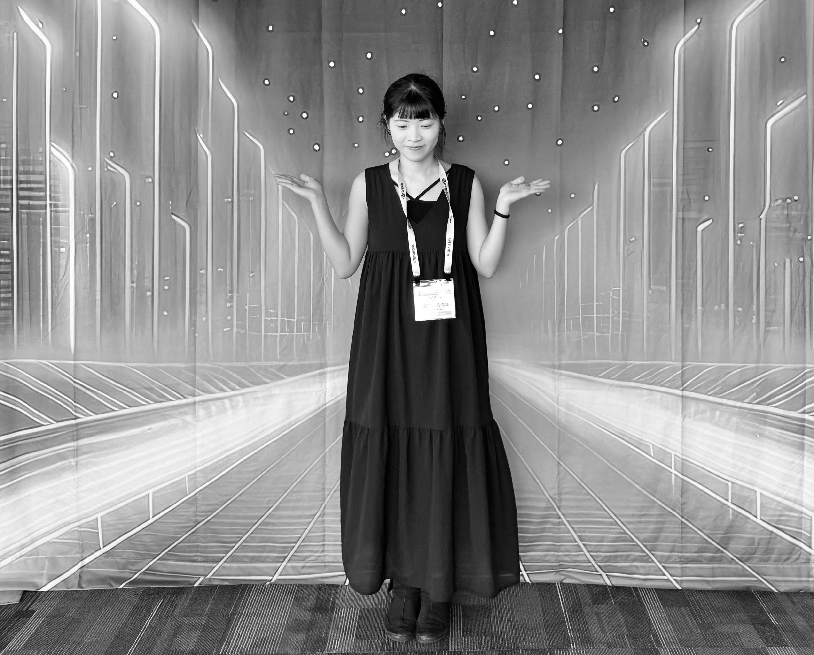

Hi, I'm Karen, a creative content engineer and technical artist based in Taipei, Taiwan.
I explore the intersection of technology and art, creating interactive installations and immersive digital experiences. My work focuses on virtual-reality interaction and the emotional connections formed with digital media.
I hold a degree in Computer Science and Technical Art and have exhibited my work. Currently, I'm experimenting with creative coding and real-time interactive systems.
Interactive installations & digital experiences
Loading featured work...
Loading projects...